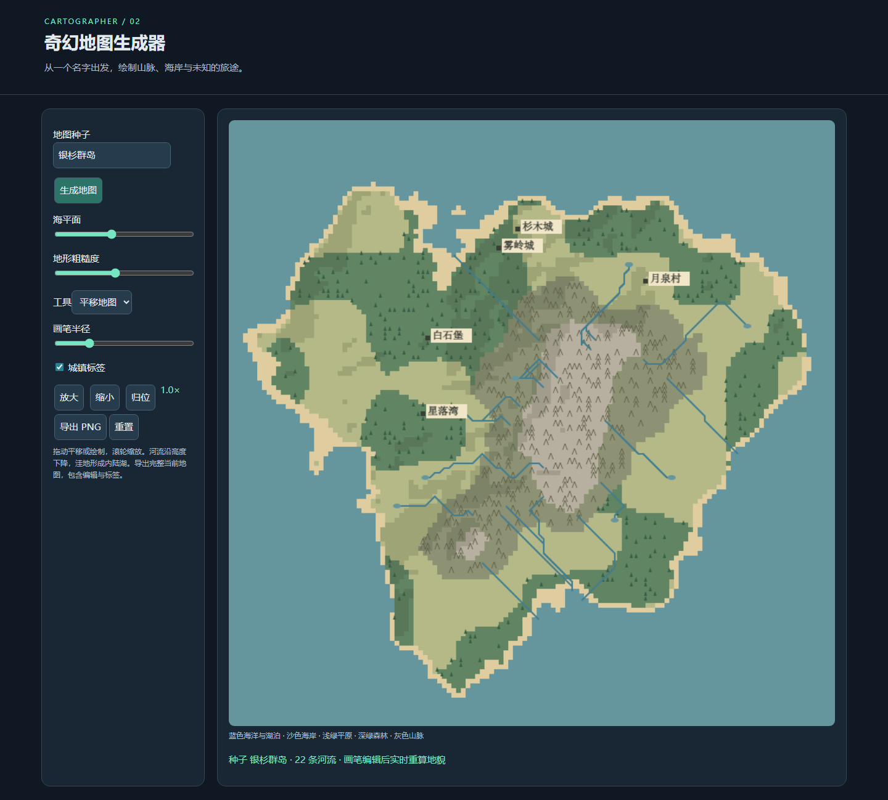

奇幻地图生成器 · GPT-6.1 Sol Low
输入与运行条件
完整归档输入包含本轮用户指令与 v1 任务正文。使用已有 Codex 会话直接执行，无子代理。模型名称 gpt-6.1-sol 和档位 low 由用户指定；目录与字典使用 gpt-6-1-sol。完整系统及前序会话上下文未归档，输入完整性为 partial。
运行
直接打开 index.html，或从仓库静态服务器打开本目录入口。无依赖、无构建、无 CDN、无后端。首次实现保留在 initial/index.html，主入口为验证后的版本。
Canvas 地形生成、地形画笔、下坡河流、城镇标签、平移缩放和完整地图 PNG 导出。
验证与复盘
自动验收位于 tests/browser/new-static-labs.spec.mjs，覆盖 HTTP 根路径、Pages 子路径、file:// 和 390px 页面布局。检查内容：种子一致性、不同种子差异、画笔修改、河流严格下降、缩放及 PNG 下载。
首次实现通过核心验证，未修改实现。
边界：地形为 128×128 网格；河流遇局部洼地形成小湖，未实现流域汇水量及侵蚀模拟。城镇位置由种子选取，标签未做自动避让。
当前会话包含实现及验证后的修复，不是只生成一次的独立盲测。实际追加修复未单独由用户输入，属于本轮自动验证过程；未覆盖其他历史实验。本轮结果仅写入主仓库，未向测试仓库写入实现或实验记录。
预览截图

由本实验最终版 index.html 在 Chromium 1440 × 1050 桌面视口生成；使用页面默认示例状态截图。
<!-- archive:start -->
当前归档信息（自动生成）
- 实验 ID：
fantasy-map-generator--gpt-6-1-sol-low-r01 - 模型：GPT-6.1 Sol；推理档位：low
- 类型：single-html；预览：static；网络：offline
- 完整原始输入快照 · 主题与其他版本
- 输入记录：保存用户本轮指令与 v1 原文；在已有会话执行，其他会话及系统上下文未完整留存，不能视为独立盲测。
- 工具：Codex。当前会话直接执行，未委派代理。模型名称 gpt-6.1-sol 与 low 档位由用户明确提供，归档 slug 为 gpt-6-1-sol；不据此推断或修改运行时设置。
- 运行方式：浏览器直接打开本目录入口；CDN/外部素材需要联网。
- 费用记录：OpenAI · ChatGPT Plus 订阅；单案例货币金额未记录。据用户说明，OpenAI 模型通过 ChatGPT Plus 订阅测试；全部案例完成后，五小时额度未耗尽。未提供单案例费用金额。
- 主页面
部署适配记录
- 保留首次实现于 initial/index.html；后续验证修复在本轮说明中记录。
- 首次实现通过核心验收，主入口与首次产物一致。 <!-- archive:end -->